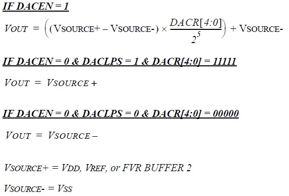

| Summary: | The value in the Required Reference text field is used to compute the voltage per each DAC step. |
| Description: | The Required Reference cannot be lower than negative reference or higher than the selected VDD. Entering a incorrect value will cause a warning in the Notifications tab .The Vref+ and Vref- text boxes are available for the user to input a value only when the VREF+ and VREF- are selected as a Positive/Negative Reference from the coresponding dropdown boxes. Changing the Vref+ and Vref- values also changes the DAC out value, acorrding to the equations below. |
| Availability: | The Required Reference text field is always available. |
| Summary: | The DAC output voltage is determined by the equations above. | 
| Description: | The DAC has several voltage level ranges which are set from the DACR bits of the DACCON1 register, in register view. |
| Availability: | The DAC Output value is always available. |